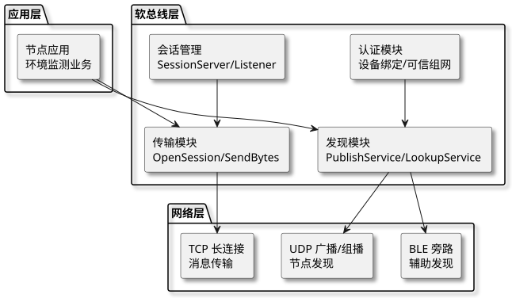
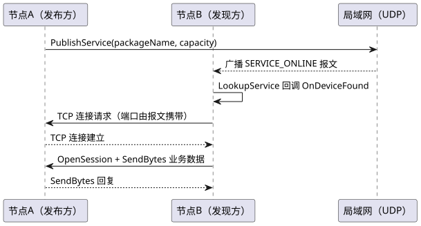
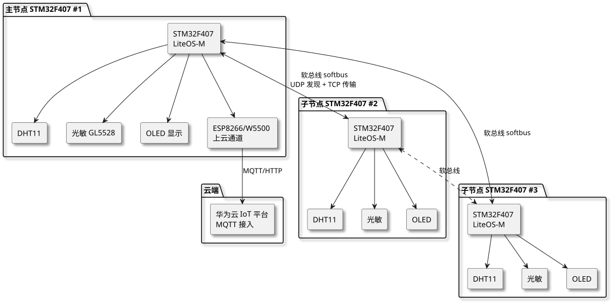
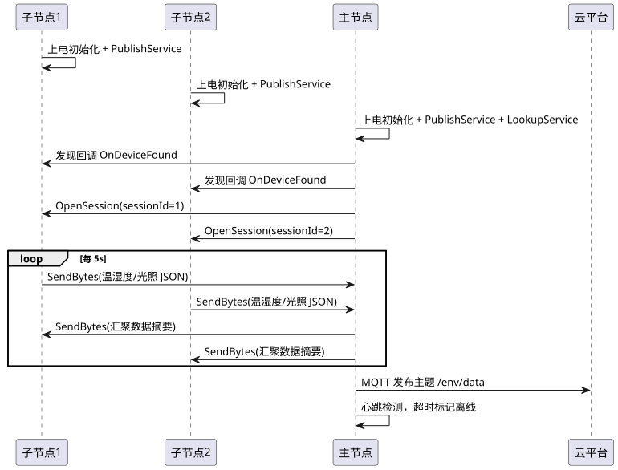

第 41 章 OpenHarmony 分布式环境监测（STM32F407 多节点）
学习目标
- 理解 OpenHarmony LiteOS-M 在 STM32F407 上的移植与任务调度机制
- 掌握 OpenHarmony 软总线（softbus）的节点发现、服务发布与消息传输流程
- 学会基于 publishService/LookupService API 构建多节点自组网系统
- 掌握 DHT11、光敏电阻、OLED 与 STM32F407 的硬件接线与驱动编写
- 能独立完成多节点分布式环境监测系统的硬件设计、软件开发与联调
- 理解分布式系统中的故障检测、节点动态加入/退出与边缘计算扩展思路
§41.1 项目需求分析
随着智慧城市与物联网技术的发展，环境监测从单点采集逐步走向多节点协同的分布式架构。传统单节点监测系统存在覆盖范围有限、单点故障、数据孤岛等问题。本项目基于 OpenHarmony LiteOS-M 与 STM32F407（拓维 Niobe407 开发板）构建一个多节点分布式环境监测系统，节点之间通过 OpenHarmony 软总线自动发现并组成网络，实现温湿度、光照数据的分布式采集与汇聚上报。
§41.1.1 功能需求
- 多节点采集：至少 3 个监测节点，每节点配备 DHT11 温湿度传感器、光敏电阻（如 GL5528）、0.96″ OLED 显示屏。
- 自动发现组网：节点上电后通过 OpenHarmony 软总线自动发现同网段的其他节点，无需人工配置 IP。
- 数据广播：每个节点周期性（默认 5 s）将本地采集的温湿度、光照数据通过软总线广播给其他节点。
- 主节点汇聚：选举一个主节点（Master）汇总所有子节点数据，并通过 ESP8266/W5500 上传至云平台（如华为云 IoT）。
- 本地显示：每个节点的 OLED 显示本地传感器数据以及网络中其他节点的最新数据摘要。
- 故障检测：主节点周期性心跳检测，若某子节点超过 30 s 未上报数据则标记为离线，OLED 显示告警。
- 节点动态加入/退出：新节点上电后自动加入网络；节点掉电或断网后，主节点在心跳超时后更新节点列表。
§41.1.2 分布式系统指标
| 指标 | 要求 | 说明 |
|---|---|---|
| 节点数量 | ≥3 个 | 可扩展至 10 个，受软总线会话上限约束 |
| 发现时延 | < 5 s | 新节点上电到被主节点发现的平均时间 |
| 消息传输时延 | < 200 ms | 同一子网内节点间端到端时延 |
| 数据上报周期 | 5 s | 可配置，最小 1 s |
| 心跳超时 | 30 s | 连续 6 个周期未收到数据则判离线 |
| 系统可用性 | 99% | 单节点故障不影响整体系统运行 |
| 主节点切换 | < 10 s | 主节点故障后，子节点重新选举新主节点 |
§41.1.3 应用场景
- 智慧农业温室：在多座温室部署节点，统一汇聚到主节点上传云平台，实现温湿度联动控制。
- 机房环境监控：在机房不同机柜部署节点，监测局部热点与湿度异常。
- 智能楼宇：在楼层部署节点，监测会议室、办公区光照与温湿度，联动空调与照明。
- 工业厂区：在车间多点部署节点，监测生产环境是否符合工艺要求。
§41.2 OpenHarmony 软总线原理
OpenHarmony 软总线（softbus）是 OpenHarmony 分布式能力的核心组件，屏蔽了底层网络的异构性（WiFi、以太网、BLE 等），为上层提供统一的设备发现、服务发布与消息传输接口。LiteOS-M 内核下，软总线通过 UDP 广播实现节点发现，TCP 短连接实现消息传输。
§41.2.1 软总线架构
§41.2.1.1 分层架构

查看 PlantUML 源码
@startuml
skinparam defaultFontName "Microsoft YaHei"
skinparam backgroundColor #ffffff
skinparam componentStyle rectangle
skinparam shadowing true
top to bottom direction
package "应用层" {
component "节点应用\n环境监测业务" as APP1
}
package "软总线层" {
component "发现模块\nPublishService/LookupService" as DISC
component "传输模块\nOpenSession/SendBytes" as TRAN
component "认证模块\n设备绑定/可信组网" as AUTH
component "会话管理\nSessionServer/Listener" as SESS
}
package "网络层" {
component "UDP 广播/组播\n节点发现" as UDP
component "TCP 长连接\n消息传输" as TCP
component "BLE 旁路\n辅助发现" as BLE
}
APP1 --> DISC
APP1 --> TRAN
DISC --> UDP
DISC --> BLE
TRAN --> TCP
AUTH --> DISC
SESS --> TRAN
@enduml§41.2.1.2 核心模块
软总线核心包含三个模块：
- 发现模块（Discovery）：提供
PublishService发布本地服务、LookupService发现远端服务的能力，基于 UDP 广播/组播在局域网内同步设备信息。 - 传输模块（Transmission）：基于 TCP 长连接提供
OpenSession、SendBytes、SendMessage等接口，支持可靠传输与流式传输。 - 认证模块（Authentication）：负责设备绑定与可信组网，LiteOS-M 简化版可使用 PIN 码或预置共享密钥。
§41.2.2 节点发现机制
§41.2.2.1 发布订阅模型
节点发现采用"发布—订阅"模型：服务端调用 PublishService 发布一个具备特定 packageName 与 capacity 的服务，客户端调用 LookupService 订阅同 packageName 的服务，发现成功后通过回调返回对端设备 ID 与 IP。流程如下：

查看 PlantUML 源码
@startuml
skinparam defaultFontName "Microsoft YaHei"
skinparam backgroundColor #ffffff
participant "节点A（发布方）" as A
participant "节点B（发现方）" as B
participant "局域网（UDP）" as N
A -> N : PublishService(packageName, capacity)
N --> B : 广播 SERVICE_ONLINE 报文
B -> B : LookupService 回调 OnDeviceFound
B -> A : TCP 连接请求（端口由报文携带）
A --> B : TCP 连接建立
B -> A : OpenSession + SendBytes 业务数据
A --> B : SendBytes 回复
@enduml§41.2.2.2 发现报文格式
发现报文（简化版）携带字段包括：设备 ID（deviceId）、设备名称（deviceName）、服务包名（packageName）、能力位（capacity）、TCP 监听端口（port）、协议版本（protoVersion）。报文采用 protobuf 或紧凑 TLV 编码，单个报文不超过 512 字节，适配 UDP MTU。
§41.2.3 消息传输流程
节点发现成功后，业务数据通过 Session 通道传输。典型流程：
- 调用
OpenSession在本地与对端 deviceId 之间建立会话，返回 sessionId。 - 注册
ISessionListener回调，监听OnSessionOpened、OnSessionClosed、OnMessageReceived、OnBytesReceived事件。 - 会话建立后，调用
SendBytes或SendMessage发送序列化后的业务数据。 - 对端通过
OnBytesReceived回调接收数据，反序列化后供业务处理。 - 会话结束调用
CloseSession释放资源。
discovery_service 与 trans_service 两个静态库编译，需要在 BUILD.gn 中显式声明依赖。STM32F407 资源有限，建议关闭 BLE 发现旁路，仅保留 WiFi/以太网路径，可节省约 30 KB RAM。
§41.3 系统架构设计
系统采用"主从 + 自组网"架构：所有节点地位对等，通过软总线互相发现；运行时通过节点 ID 最小值算法选举一个主节点（Master），负责汇聚数据并上云；其余节点为子节点（Slave），负责本地采集与数据广播。主节点故障后，剩余子节点重新选举，保证系统持续运行。

查看 PlantUML 源码
@startuml
skinparam defaultFontName "Microsoft YaHei"
skinparam backgroundColor #ffffff
skinparam componentStyle rectangle
skinparam shadowing true
top to bottom direction
package "云端" {
component "华为云 IoT 平台\nMQTT 接入" as CLOUD
}
package "主节点 STM32F407 #1" {
component "STM32F407\nLiteOS-M" as M_MCU
component "DHT11" as M_DHT
component "光敏 GL5528" as M_LDR
component "OLED 显示" as M_OLED
component "ESP8266/W5500\n上云通道" as M_WIFI
M_MCU --> M_DHT
M_MCU --> M_LDR
M_MCU --> M_OLED
M_MCU --> M_WIFI
}
package "子节点 STM32F407 #2" {
component "STM32F407\nLiteOS-M" as S1_MCU
component "DHT11" as S1_DHT
component "光敏" as S1_LDR
component "OLED" as S1_OLED
S1_MCU --> S1_DHT
S1_MCU --> S1_LDR
S1_MCU --> S1_OLED
}
package "子节点 STM32F407 #3" {
component "STM32F407\nLiteOS-M" as S2_MCU
component "DHT11" as S2_DHT
component "光敏" as S2_LDR
component "OLED" as S2_OLED
S2_MCU --> S2_DHT
S2_MCU --> S2_LDR
S2_MCU --> S2_OLED
}
M_MCU <--> S1_MCU : 软总线 softbus\nUDP 发现 + TCP 传输
M_MCU <--> S2_MCU : 软总线 softbus
S1_MCU <..> S2_MCU : 软总线
M_WIFI --> CLOUD : MQTT/HTTP
@enduml系统软件层次自下而上分为：硬件驱动层（HAL）、内核层（LiteOS-M）、软总线层（softbus）、业务层（环境监测任务）。各层之间通过明确的接口解耦，便于移植与扩展。
§41.4 硬件设计
每个节点的硬件配置完全一致，便于角色切换（主/子节点）。主节点额外具备上云通道（ESP8266 或 W5500）。
§41.4.1 BOM 清单
| 序号 | 元件 | 型号 | 数量 | 用途 |
|---|---|---|---|---|
| 1 | 主控板 | 拓维 Niobe407（STM32F407VGT6） | 3 | 运行 LiteOS-M 与软总线 |
| 2 | 温湿度传感器 | DHT11 | 3 | 采集温度与湿度 |
| 3 | 光敏电阻 | GL5528 | 3 | 采集环境光照强度 |
| 4 | 分压电阻 | 10 kΩ 1% | 3 | 与光敏电阻组成分压网络 |
| 5 | OLED 显示屏 | 0.96″ SSD1306 I2C | 3 | 显示本节点与远端节点数据 |
| 6 | WiFi 模块 | ESP8266-01S | 1 | 主节点上云通道（备选 W5500） |
| 7 | 以太网模块 | W5500 SPI | 1 | 主节点上云通道（备选 ESP8266） |
| 8 | 状态 LED | 红/绿/蓝三色 | 3 套 | 指示节点状态（采集/组网/告警） |
| 9 | 调试串口 | USB-TTL CH340 | 1 | 日志输出与抓包调试 |
| 10 | 电源 | 5V 2A 电源适配器 | 3 | 节点供电 |
§41.4.2 接线表
STM32F407 各引脚分配如下表（以 Niobe407 为例，引脚名称采用 STM32F4 数据手册标注）：
| 模块 | 模块引脚 | STM32F407 引脚 | 外设/总线 | 说明 |
|---|---|---|---|---|
| DHT11 | DATA | PG9 | GPIO 输出/输入 | 单总线协议，需 4.7 kΩ 上拉 |
| GL5528 | 分压输出 | PA0 | ADC1_IN0 | 10 kΩ 接 GND，光敏接 3.3V |
| OLED SSD1306 | SCL / SDA | PB8 / PB9 | I2C1 | 地址 0x3C，4.7 kΩ 上拉 |
| ESP8266 | TX/RX/EN | PA9/PA10/PA12 | USART1 + GPIO | 主节点上云，AT 指令模式 |
| W5500（备选） | SCK/MISO/MOSI/CS | PA5/PA6/PA7/PA4 | SPI1 | 硬件 TCP/IP 协议栈 |
| 状态 LED 红/绿/蓝 | + | PE13/PE14/PE15 | GPIO 推挽输出 | 低电平点亮，1 kΩ 限流 |
| 调试串口 | TX/RX | PC10/PC11 | UART4 | 115200 bps，8N1 |
| 晶振 | HSE | OSC_IN/OSC_OUT | — | 8 MHz + 2×22pF，PLL 倍频 168 MHz |
§41.5 软件架构与关键代码
软件采用分层设计：底层 HAL 驱动负责传感器与外设读写；中间层 LiteOS-M 提供任务调度与软总线支撑；上层业务任务负责采集、组网、显示与上云。整个系统由 6 个核心任务组成，由 LiteOS-M 调度器并发执行。
§41.5.1 任务划分
| 任务名 | 优先级 | 栈大小 | 职责 |
|---|---|---|---|
| SensorTask | 5 | 1024 B | 周期采集 DHT11 与光敏数据，写入本地数据缓冲区 |
| SoftbusTask | 4 | 2048 B | 调用 PublishService 发布服务，处理发现回调 |
| SessionTask | 4 | 2048 B | 管理会话，周期性 SendBytes 广播本地数据 |
| DisplayTask | 3 | 1024 B | OLED 刷新本地与远端节点数据 |
| CloudTask | 3 | 2048 B | 仅主节点运行，MQTT 上报到云平台 |
| HeartbeatTask | 6 | 512 B | 主节点心跳检测，超时标记节点离线 |
§41.5.2 软总线通信时序

查看 PlantUML 源码
@startuml
skinparam defaultFontName "Microsoft YaHei"
skinparam backgroundColor #ffffff
participant "子节点1" as S1
participant "子节点2" as S2
participant "主节点" as M
participant "云平台" as C
S1 -> S1 : 上电初始化 + PublishService
S2 -> S2 : 上电初始化 + PublishService
M -> M : 上电初始化 + PublishService + LookupService
M -> S1 : 发现回调 OnDeviceFound
M -> S2 : 发现回调 OnDeviceFound
M -> S1 : OpenSession(sessionId=1)
M -> S2 : OpenSession(sessionId=2)
loop 每 5s
S1 -> M : SendBytes(温湿度/光照 JSON)
S2 -> M : SendBytes(温湿度/光照 JSON)
M -> S1 : SendBytes(汇聚数据摘要)
M -> S2 : SendBytes(汇聚数据摘要)
end
M -> C : MQTT 发布主题 /env/data
M -> M : 心跳检测，超时标记离线
@enduml§41.5.3 节点初始化与服务发布
节点上电后首先完成硬件初始化、LiteOS-M 内核启动、网络接口（WiFi 或以太网）配置，然后调用软总线 API 发布本地服务并启动发现流程。完整代码位于 /code/stm32f407/oh-distributed-env/softbus_node.c。
/* softbus_node.c - OpenHarmony 软总线节点核心实现 */
#include "softbus_bus_manager.h"
#include "softbus_discovery_interface.h"
#include "softbus_transmission_interface.h"
#include "cmsis_os.h"
#include <string.h>
#include <stdio.h>
#define PKG_NAME "env.monitor.svc"
#define SESSION_NAME "session.env.data"
#define NODE_CAPACITY 0x01 /* 环境监测能力位 */
#define NODE_MAX 10
#define DATA_PERIOD_MS 5000
#define HEARTBEAT_TIMEOUT_MS 30000
/* 节点信息表 */
typedef struct {
char deviceId[65];
char deviceName[32];
uint32_t lastSeen; /* 上次收到数据的系统 tick */
int temp_x10; /* 远端温度 x10 */
int humid_x10;
int light; /* 光照 ADC 原始值 */
bool online;
} NodeInfo;
static NodeInfo g_nodes[NODE_MAX];
static int g_nodeCount = 0;
static char g_localDeviceId[65] = "STM32F407-NODE-0001";
static bool g_isMaster = false;
static int g_masterScore = 0; /* 选举得分：deviceId 字典序最小者当选 */
/* 本地传感器数据 */
typedef struct {
int temp_x10;
int humid_x10;
int light;
} SensorData;
static SensorData g_localData = {0};
/* ============ 1. 发现回调 ============ */
static void OnDeviceFound(const DeviceInfo *device)
{
int i;
for (i = 0; i < g_nodeCount; i++) {
if (strcmp(g_nodes[i].deviceId, device->devId) == 0) {
g_nodes[i].lastSeen = osKernelSysTick();
g_nodes[i].online = true;
return;
}
}
if (g_nodeCount >= NODE_MAX) return;
strncpy(g_nodes[g_nodeCount].deviceId, device->devId, sizeof(g_nodes[0].deviceId)-1);
strncpy(g_nodes[g_nodeCount].deviceName, device->devName, sizeof(g_nodes[0].deviceName)-1);
g_nodes[g_nodeCount].lastSeen = osKernelSysTick();
g_nodes[g_nodeCount].online = true;
g_nodeCount++;
printf("[SOFTBUS] New device: %s (%s)\r\n", device->devId, device->devName);
}
static void OnDiscoverResult(int32_t resultCode)
{
printf("[SOFTBUS] LookupService result: %d\r\n", resultCode);
}
static void OnPublishResult(int32_t resultCode)
{
printf("[SOFTBUS] PublishService result: %d\r\n", resultCode);
}
/* 发现回调结构体 */
static IPublishCallback g_publishCb = {
.onPublishResult = OnPublishResult
};
static IServerListener g_lookupCb = {
.OnDeviceFound = OnDeviceFound,
.OnDiscoverResult = OnDiscoverResult
};
/* ============ 2. 会话回调 ============ */
static void OnSessionOpened(int sessionId, int result)
{
printf("[SOFTBUS] Session opened: id=%d result=%d\r\n", sessionId, result);
}
static void OnSessionClosed(int sessionId)
{
printf("[SOFTBUS] Session closed: id=%d\r\n", sessionId);
}
static void OnBytesReceived(int sessionId, const void *data, unsigned int dataLen)
{
const char *json = (const char *)data;
char devId[65] = {0};
int t, h, l;
/* 简化协议：{"dev":"STM32F407-NODE-0002","t":256,"h":580,"l":1234} */
if (sscanf(json, "{\"dev\":\"%64[^\"]\",\"t\":%d,\"h\":%d,\"l\":%d}",
devId, &t, &h, &l) == 4) {
for (int i = 0; i < g_nodeCount; i++) {
if (strcmp(g_nodes[i].deviceId, devId) == 0) {
g_nodes[i].temp_x10 = t;
g_nodes[i].humid_x10 = h;
g_nodes[i].light = l;
g_nodes[i].lastSeen = osKernelSysTick();
g_nodes[i].online = true;
break;
}
}
}
}
static ISessionListener g_sessionCb = {
.OnSessionOpened = OnSessionOpened,
.OnSessionClosed = OnSessionClosed,
.OnBytesReceived = OnBytesReceived
};
/* ============ 3. 节点初始化 ============ */
int SoftbusNode_Init(void)
{
/* 3.1 设置本地设备信息 */
SetLocalDeviceInfo(g_localDeviceId, "Niobe407-EnvNode", NODE_CAPACITY);
/* 3.2 注册会话服务端 */
if (CreateSessionServer(SESSION_NAME, &g_sessionCb) != 0) {
printf("[SOFTBUS] CreateSessionServer failed\r\n");
return -1;
}
/* 3.3 发布本地服务，等待其他节点发现 */
PublishInfo pub = {
.publishId = 1,
.mode = DISCOVER_MODE_ACTIVE,
.medium = COAP,
.freq = MID,
.capability = PKG_NAME,
.capabilityData = "",
.dataLength = 0
};
if (PublishService(&pub, &g_publishCb) != 0) {
printf("[SOFTBUS] PublishService failed\r\n");
return -1;
}
/* 3.4 启动远端服务发现 */
SubscribeInfo sub = {
.subscribeId = 1,
.mode = DISCOVER_MODE_ACTIVE,
.medium = COAP,
.freq = MID,
.capability = PKG_NAME,
.capabilityData = "",
.dataLength = 0
};
if (LookupService(&sub, &g_lookupCb) != 0) {
printf("[SOFTBUS] LookupService failed\r\n");
return -1;
}
printf("[SOFTBUS] Node init OK, deviceId=%s\r\n", g_localDeviceId);
return 0;
}
/* ============ 4. 数据广播任务 ============ */
void SoftbusTask(void const *arg)
{
char buf[128];
(void)arg;
osDelay(2000); /* 等待软总线初始化完成 */
for (;;) {
int n = snprintf(buf, sizeof(buf),
"{\"dev\":\"%s\",\"t\":%d,\"h\":%d,\"l\":%d}",
g_localDeviceId, g_localData.temp_x10,
g_localData.humid_x10, g_localData.light);
/* 向所有已知会话广播 */
for (int sid = 1; sid <= g_nodeCount; sid++) {
SendBytes(sid, buf, n);
}
osDelay(DATA_PERIOD_MS);
}
}
/* ============ 5. 主节点选举（基于 deviceId 字典序最小）============ */
void MasterElection(void)
{
g_masterScore = strcmp(g_localDeviceId, "STM32F407-NODE-0001") <= 0 ? 0 : 1;
for (int i = 0; i < g_nodeCount; i++) {
if (strcmp(g_nodes[i].deviceId, g_localDeviceId) < 0) {
g_masterScore = 1; /* 存在 deviceId 更小的节点 */
break;
}
}
g_isMaster = (g_masterScore == 0);
printf("[ELECT] isMaster=%d\r\n", g_isMaster);
}
/* ============ 6. 心跳检测任务（仅主节点）============ */
void HeartbeatTask(void const *arg)
{
(void)arg;
for (;;) {
uint32_t now = osKernelSysTick();
for (int i = 0; i < g_nodeCount; i++) {
if (g_nodes[i].online &&
(now - g_nodes[i].lastSeen) > HEARTBEAT_TIMEOUT_MS) {
g_nodes[i].online = false;
printf("[HEART] Node %s offline\r\n", g_nodes[i].deviceId);
}
}
osDelay(5000);
}
}
§41.5.4 传感器数据序列化与采集
§41.5.4.1 数据序列化与采集任务
传感器数据采用紧凑 JSON 文本格式序列化，便于人类可读与跨平台解析。每帧消息包含设备 ID、温度（×10 整数，避免浮点）、湿度（×10）、光照 ADC 原始值四个字段，整体不超过 80 字节，适合软总线单包传输。
/* sensor_task.c - 传感器采集与本地数据更新 */
#include "cmsis_os.h"
#include "dht11.h"
#include "adc.h"
#include "softbus_node.h"
#include <stdio.h>
extern SensorData g_localData;
void SensorTask(void const *arg)
{
(void)arg;
DHT11_Init();
ADC_Init();
osDelay(1000); /* DHT11 上电稳定 1s */
for (;;) {
int temp = 0, humid = 0;
if (DHT11_Read(&temp, &humid) == 0) {
g_localData.temp_x10 = temp; /* DHT11 库返回 x10 */
g_localData.humid_x10 = humid;
} else {
printf("[SENS] DHT11 read fail\r\n");
}
g_localData.light = ADC_Read(ADC1, ADC_CHANNEL_0);
printf("[SENS] T=%d.%d H=%d.%d L=%d\r\n",
temp/10, temp%10, humid/10, humid%10, g_localData.light);
osDelay(2000);
}
}
§41.5.4.2 DHT11 单总线驱动
DHT11 单总线驱动采用 GPIO 模拟时序，关键点在于微秒级时序控制。STM32F407 主频 168 MHz 下，使用 DWT（Data Watchpoint and Trace）周期计数器实现精确延时。
/* dht11.c - DHT11 驱动（基于 STM32 HAL + DWT 微秒延时）*/
#include "dht11.h"
#include "stm32f4xx_hal.h"
#define DHT11_PIN GPIO_PIN_9
#define DHT11_PORT GPIOG
#define DHT11_DLY_US(us) DWT_Delay_us(us)
static void DWT_Delay_us(uint32_t us)
{
uint32_t start = *DWT_CYCCNT;
uint32_t ticks = us * (SystemCoreClock / 1000000);
while ((*DWT_CYCCNT - start) < ticks);
}
void DHT11_Init(void)
{
/* 使能 DWT 周期计数器 */
CoreDebug->DEMCR |= CoreDebug_DEMCR_TRCENA_Msk;
DWT->CYCCNT = 0;
DWT->CTRL |= DWT_CTRL_CYCCNTENA_Msk;
}
static void DHT11_SetOutput(void)
{
GPIO_InitTypeDef g = {0};
g.Pin = DHT11_PIN;
g.Mode = GPIO_MODE_OUTPUT_PP;
g.Speed = GPIO_SPEED_FREQ_HIGH;
HAL_GPIO_Init(DHT11_PORT, &g);
}
static void DHT11_SetInput(void)
{
GPIO_InitTypeDef g = {0};
g.Pin = DHT11_PIN;
g.Mode = GPIO_MODE_INPUT;
g.Pull = GPIO_PULLUP;
HAL_GPIO_Init(DHT11_PORT, &g);
}
int DHT11_Read(int *temp_x10, int *humid_x10)
{
uint8_t buf[5] = {0};
uint8_t i, j;
DHT11_SetOutput();
HAL_GPIO_WritePin(DHT11_PORT, DHT11_PIN, GPIO_PIN_RESET);
DHT11_DLY_US(20000); /* 主机拉低 ≥18ms */
HAL_GPIO_WritePin(DHT11_PORT, DHT11_PIN, GPIO_PIN_SET);
DHT11_DLY_US(30);
DHT11_SetInput();
/* 等待 DHT11 响应：80us 低 + 80us 高 */
while (HAL_GPIO_ReadPin(DHT11_PORT, DHT11_PIN) == GPIO_PIN_SET);
while (HAL_GPIO_ReadPin(DHT11_PORT, DHT11_PIN) == GPIO_PIN_RESET);
while (HAL_GPIO_ReadPin(DHT11_PORT, DHT11_PIN) == GPIO_PIN_SET);
/* 读取 40 bit 数据 */
for (i = 0; i < 5; i++) {
for (j = 0; j < 8; j++) {
while (HAL_GPIO_ReadPin(DHT11_PORT, DHT11_PIN) == GPIO_PIN_RESET);
DHT11_DLY_US(40);
buf[i] <<= 1;
if (HAL_GPIO_ReadPin(DHT11_PORT, DHT11_PIN) == GPIO_PIN_SET) {
buf[i] |= 1;
while (HAL_GPIO_ReadPin(DHT11_PORT, DHT11_PIN) == GPIO_PIN_SET);
}
}
}
/* 校验和 */
if (((buf[0]+buf[1]+buf[2]+buf[3]) & 0xFF) != buf[4]) return -1;
*humid_x10 = buf[0] * 10 + buf[1]; /* DHT11 整数部分，小数位通常为 0 */
*temp_x10 = buf[2] * 10 + buf[3];
return 0;
}
§41.5.5 OLED 显示任务
OLED 采用 SSD1306 驱动芯片，通过 I2C1 总线与 STM32F407 通信。显示任务每秒刷新一次，分三行显示：本地传感器数据、网络中节点列表摘要、主节点标识与时间戳。
/* display_task.c - OLED 显示 */
#include "cmsis_os.h"
#include "ssd1306.h"
#include "softbus_node.h"
#include <stdio.h>
extern NodeInfo g_nodes[];
extern int g_nodeCount;
extern bool g_isMaster;
extern char g_localDeviceId[];
extern SensorData g_localData;
void DisplayTask(void const *arg)
{
(void)arg;
SSD1306_Init();
SSD1306_Clear();
for (;;) {
char line[22];
SSD1306_Clear();
/* 第 1 行：本地数据 */
snprintf(line, sizeof(line), "L:%s T:%d.%dC",
g_localDeviceId+12, g_localData.temp_x10/10, g_localData.temp_x10%10);
SSD1306_DrawString(0, 0, line, 1);
/* 第 2 行：湿度与光照 */
snprintf(line, sizeof(line), "H:%d.%d%% L:%d",
g_localData.humid_x10/10, g_localData.humid_x10%10, g_localData.light);
SSD1306_DrawString(0, 12, line, 1);
/* 第 3 行：远端节点摘要 */
snprintf(line, sizeof(line), "Peers:%d %s",
g_nodeCount, g_isMaster ? "[M]" : "[S]");
SSD1306_DrawString(0, 24, line, 1);
/* 第 4~7 行：每个节点一行 */
for (int i = 0; i < g_nodeCount && i < 4; i++) {
snprintf(line, sizeof(line), "%s T:%d.%d %s",
g_nodes[i].deviceName+12,
g_nodes[i].temp_x10/10, g_nodes[i].temp_x10%10,
g_nodes[i].online ? "ON" : "OFF");
SSD1306_DrawString(0, 36 + i*8, line, 1);
}
SSD1306_UpdateScreen();
osDelay(1000);
}
}
§41.5.6 LiteOS-M 任务调度入口
主程序在 main() 中完成 HAL 初始化、系统时钟配置，然后调用 osKernelInitialize() 创建任务并启动调度器。LiteOS-M 的 CMSIS-RTOS 适配层让代码可移植到 FreeRTOS 等其他 RTOS。
/* main.c - LiteOS-M 任务调度入口 */
#include "stm32f4xx_hal.h"
#include "cmsis_os.h"
#include "softbus_node.h"
extern void SensorTask(void const *arg);
extern void SoftbusTask(void const *arg);
extern void DisplayTask(void const *arg);
extern void HeartbeatTask(void const *arg);
int main(void)
{
HAL_Init();
SystemClock_Config();
MX_GPIO_Init();
MX_USART_Init();
osKernelInitialize();
/* 任务创建：栈大小以字节为单位（CMSIS-RTOS v1），优先级数字越大越高 */
osThreadDef(Sensor, SensorTask, osPriorityAboveNormal, 0, 1024);
osThreadDef(Softbus, SoftbusTask, osPriorityNormal, 0, 2048);
osThreadDef(Display, DisplayTask, osPriorityBelowNormal, 0, 1024);
osThreadDef(Heartbeat, HeartbeatTask, osPriorityHigh, 0, 512);
SoftbusNode_Init(); /* 软总线初始化（在任务启动前完成）*/
MasterElection(); /* 主节点选举 */
osThreadCreate(osThread(Sensor), NULL);
osThreadCreate(osThread(Softbus), NULL);
osThreadCreate(osThread(Display), NULL);
if (g_isMaster) {
osThreadCreate(osThread(Heartbeat), NULL);
}
osKernelStart(); /* 启动调度器，永不返回 */
while (1);
}
§41.6 工程构建与调试
§41.6.1 工程结构
oh-distributed-env/
├── application/
│ └── env_monitor/
│ ├── main.c # 任务调度入口
│ ├── softbus_node.c # 软总线节点实现
│ ├── sensor_task.c # 传感器采集任务
│ ├── display_task.c # OLED 显示任务
│ ├── cloud_task.c # 云端上报任务（仅主节点）
│ └── BUILD.gn # 编译脚本
├── driver/
│ ├── dht11.c / dht11.h # DHT11 驱动
│ ├── ssd1306.c / ssd1306.h # OLED 驱动
│ └── adc.c # 光敏 ADC 读取
├── third_party/
│ └── softbus/ # OpenHarmony 软总线库
├── vendor/
│ └── niobe407/ # 拓维 Niobe407 板级配置
├── hb/ # HarmonyOS Build 命令行工具
└── README.md # 复现指南
§41.6.2 多节点编译
OpenHarmony LiteOS-M 工程使用 hb（HarmonyOS Build）命令行工具构建。每个节点通过不同的 vendor/niobe407/config.json 中的 device_id 字段区分身份。编译流程：
# 1. 设置编译环境
cd oh-distributed-env
hb set
# 选择 niobe407 产品
# 2. 修改 device_id（三台节点分别改为 NODE-0001/0002/0003）
# 编辑 vendor/niobe407/config.json 中 "device_id" 字段
# 3. 编译
hb build -f
# 输出：out/niobe407/Hi3861_demo.bin（实际为 STM32F407 固件）
# 4. 烧录（使用 ST-Link + OpenOCD）
openocd -f interface/stlink.cfg -f target/stm32f4x.cfg \
-c "program out/niobe407/Hi3861_demo.bin verify reset exit 0x08000000"
§41.6.3 软总线抓包
调试软总线问题时，可通过以下方式定位：
- UART 日志：节点调试串口输出
[SOFTBUS]前缀日志，关注OnDeviceFound、OnSessionOpened、OnBytesReceived回调是否触发。 - Wireshark 抓包：将节点接入交换机镜像口，过滤 UDP 端口 5683（CoAP）观察发现报文，过滤 TCP 端口 6000+ 观察会话数据。
- ping 检查：若节点间无法互相发现，先用
ping确认 IP 层连通，再检查防火墙是否拦截 UDP 5683 端口。 - 设备 ID 冲突：若两台节点使用相同
deviceId，软总线会认为同一设备而拒绝建连。务必保证device_id全网唯一。
§41.6.4 常见问题排查
| 现象 | 可能原因 | 解决方案 |
|---|---|---|
| 节点上电后互相发现不到 | 不同子网或防火墙拦截 UDP 5683 | 检查节点 IP 是否同网段；关闭防火墙或开放端口 |
| 会话建立后立即断开 | 认证未通过或 device_id 冲突 | 检查 device_id 唯一性；关闭 PIN 认证或预置共享密钥 |
| SendBytes 返回错误码 12 | 会话未开启或对端已离线 | 先调用 OpenSession 等待 OnSessionOpened 回调 |
| DHT11 读数全 0 或全 255 | 上拉电阻缺失或时序错误 | 确认 DATA 引脚有 4.7 kΩ 上拉；用逻辑分析仪检查时序 |
| OLED 花屏 | I2C 地址错误或刷屏过快 | SSD1306 地址常为 0x3C 或 0x3D；刷屏间隔 ≥1 s |
| 主节点上云失败 | ESP8266 未联网或 MQTT 鉴权失败 | 先 AT 指令测试 WiFi 联网；核对 MQTT clientId/username/password |
§41.7 扩展方向
§41.7.1 节点动态加入与退出
当前实现支持节点掉电后由主节点心跳超时检测并标记离线，但若网络短暂抖动导致会话中断，可增加"会话重连机制"：在 OnSessionClosed 回调中启动重连定时器，指数退避重试（初始 1 s，最大 30 s），重试成功后恢复数据传输。
§41.7.2 Mesh 网络拓扑
软总线默认采用星型拓扑（主节点中心化），在大规模部署时主节点会成为瓶颈。可引入 Mesh 拓扑：节点之间两两建立会话，采用洪泛或路由表方式转发消息。OpenHarmony 3.1+ 提供 TransProxyChannel 代理通道支持多跳转发，但 LiteOS-M 适配仍在社区推进中。
§41.7.3 低功耗休眠
对于电池供电的远端节点，可在采集间隔期进入 STOP 模式，由 RTC 唤醒。STM32F407 STOP 模式功耗约 0.5 mA，唤醒后恢复运行约 10 μs。需注意 WiFi/以太网模块需独立控制电源或进入 sleep 模式，否则整体功耗难以降低。
§41.7.4 边缘 AI 推理
在主节点部署轻量级异常检测模型，对汇聚的多节点数据流做实时异常检测（如温度突升、光照异常）。STM32F407 算力有限（无 NPU），可使用 CMSIS-NN 部署量化后的 TinyML 模型（<100 KB），推理时延 <100 ms。检测到异常后通过 MQTT 上报告警事件。
§41.7.5 时间同步
分布式系统需统一时间基准以便数据对齐。可在主节点通过 NTP 同步云端时间，再通过软总线广播时间戳给子节点；或采用 PTP（IEEE 1588）协议实现微秒级同步，但 STM32F407 需硬件支持 IEEE 1588，本型号不支持，建议软件 NTP 方案。
本章小结
- 分布式环境监测系统采用"主从 + 自组网"架构，节点地位对等、主节点动态选举，保证单点故障下系统持续运行。
- OpenHarmony 软总线屏蔽底层网络异构性，通过 PublishService/LookupService 实现节点发现，OpenSession/SendBytes 实现可靠消息传输，是构建分布式 IoT 应用的关键中间件。
- STM32F407 + LiteOS-M 提供足够的算力与内存运行软总线与多任务并发，6 个核心任务（采集/软总线/会话/显示/上云/心跳）协同完成端到端业务。
- 硬件设计强调节点一致性（DHT11 + 光敏 + OLED + WiFi），便于角色切换；主节点额外具备上云通道。
- 调试软总线问题需结合 UART 日志与 Wireshark 抓包，重点关注 UDP 5683 端口的发现报文与 TCP 会话数据。
- 扩展方向涵盖动态重连、Mesh 拓扑、低功耗休眠、边缘 AI 与时间同步，可按场景需求逐步演进。
思考题与习题
- 简述 OpenHarmony 软总线的三层架构（发现/传输/认证）职责，并说明为什么节点发现使用 UDP 广播而消息传输使用 TCP 长连接。
- 本项目中主节点选举采用"deviceId 字典序最小者当选"算法，分析该算法在节点动态加入/退出时的边界情况，并给出一种改进的选举算法（如 Bully 算法）的思路。
- 修改
SoftbusTask，将数据广播周期从 5 s 改为 1 s，并测量节点 CPU 占用率与网络流量的变化。思考在保持实时性与降低功耗之间如何权衡。 - 设计一个基于
OnSessionClosed回调的指数退避重连机制，初始重试间隔 1 s，最大 30 s，写出伪代码并分析重连风暴（thundering herd）问题如何避免。 - 本项目的消息格式为紧凑 JSON，若改用 protobuf 编码可节省多少字节？请用
protoc工具生成 C 代码并对比两种方案的 RAM 占用与解码时延。 - 在主节点部署一个简单的温度异常检测算法（如滑动窗口均值 ±3σ），当某节点温度偏离阈值时通过 MQTT 发布告警。给出算法伪代码与云端订阅主题设计。
参考文献
- OpenHarmony 社区. 分布式软总线指南 [EB/OL]. 2024. https://gitee.com/openharmony/docs/blob/master/zh-cn/application-dev/communication/dsoftbus-guide.md
- OpenHarmony 社区. LiteOS-M 内核移植指南 [EB/OL]. 2024. https://gitee.com/openharmony/kernel_liteos_m
- 拓维信息. Niobe407 开发板 OpenHarmony 移植文档 [Z]. 2023. https://gitee.com/openharmony/vendor_talkweb
- STMicroelectronics. STM32F407 Reference Manual RM0090 [Z]. 2024. https://www.st.com/resource/en/reference_manual/dm00031020.pdf
- Lamport L. Time, Clocks, and the Ordering of Events in a Distributed System [J]. Communications of the ACM, 1978, 21(7): 558-565.
- Garcia-Molina H. Elections in a Distributed Computing System [J]. IEEE Transactions on Computers, 1982, C-31(1): 48-59.
- Zhang Y, et al. Edge Intelligence for IoT: A Survey on Distributed Lightweight Deep Learning [J]. IEEE Internet of Things Journal, 2022, 9(11): 8421-8438.
- 华为云. IoT 设备接入 MQTT 协议参考 [EB/OL]. 2024. https://support.huaweicloud.com/devg-iothub/iot_01_0100.html